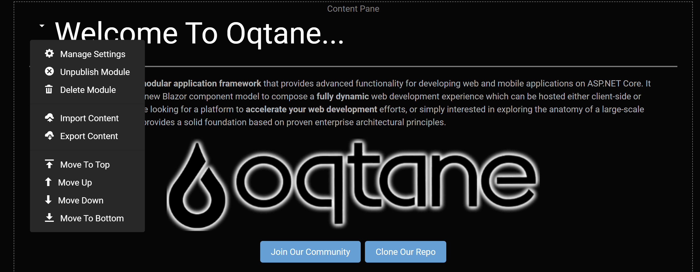

Content Editor
The content editor is what allows you to edit the modules on the page in a variety of ways. You access the content editor by clicking on the pencil on the top right side of the page which then shows the borders of the content pane which the modules are put inside of, as well as a small downward pointing arrow beside each module that allows you to open a menu to interact with the modules.


The options for the module's menu are:
- Manage Settings: Brings up the module's settings and permissions which allow you to change the:
- Title: The title displayed above the module.
- Container: Specify if you want the title to be displayed for the module.
- Display on All Pages: Choose whether you want this module to be on every page on the site.
- Page: Change the page that the module is displayed on.
- Permissions: Specify either what roles or individual users should be able to view or edit the page.
- Unpublish Module: Hides the module from everyone, but the site administrators for instances where you want to edit modules.
- Delete Module: Deletes the module from the page.
- Import Content: Enter a file's address to import it into the module, such as a image address to include it.
- Export Content: Enter a file address to select where to export data from a module.
- Move to Top: Moves the modules to the top of the page to be the first module displayed.
- Move Up: Moves the module up to be above the module above it.
- Move Down: Move the module down below the module beneath it.
- Move to Bottom: Moves the module to the bottom of the page, below all other modules. If the page has the layout for multiple panes, which will allows for three center rows and a top and bottom row that can have content inserted into them, then there will be additional options available which are:
- Move to Top Pane: Moves the module to the content pane at the top of the page.
- Move to Left Pane: Moves the module to the left-most column.
- Move to Right Pane: Moves the module to the right-most column.
- Move to Content Pane: Moves the module to the central column.
- Move to Bottom Pane: Moves the module to the pane at the bottom of the page.